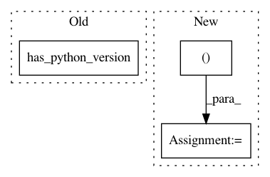

c06e831ff0607c4a986618903b32a917084e3ed4,tests/python/pants_test/backend/python/test_interpreter_cache.py,TestInterpreterCache,test_pex_python_paths,#TestInterpreterCache#,144
Before Change
Test pex python path helper method of PythonInterpreterCache.
py27 = "2"
py3 = "3"
if PantsRunIntegrationTest.has_python_version(py27) and PantsRunIntegrationTest.has_python_version(py3):
print("Found both python {} and python {}. Running test.".format(py27, py3))
py27_path = PantsRunIntegrationTest.python_interpreter_path(py27)
py3_path = PantsRunIntegrationTest.python_interpreter_path(py3)
After Change
@skip_unless_python27_and_python36
def test_pex_python_paths(self):
Test pex python path helper method of PythonInterpreterCache.
py27_path, py36_path = python_interpreter_path(PY_27), python_interpreter_path(PY_36)
with setup_pexrc_with_pex_python_path([py27_path, py36_path]):
with self._setup_cache() as (cache, _):
pex_python_paths = cache.pex_python_paths()
self.assertEqual(pex_python_paths, [py27_path, py36_path])
In pattern: SUPERPATTERN
Frequency: 3
Non-data size: 3
Instances
Project Name: pantsbuild/pants
Commit Name: c06e831ff0607c4a986618903b32a917084e3ed4
Time: 2018-09-06
Author: john.sirois@gmail.com
File Name: tests/python/pants_test/backend/python/test_interpreter_cache.py
Class Name: TestInterpreterCache
Method Name: test_pex_python_paths
Project Name: pantsbuild/pants
Commit Name: 94d6f2050c7b198fe742f0c42607178e4a7c8a9f
Time: 2019-05-17
Author: john.sirois@gmail.com
File Name: contrib/mypy/tests/python/pants_test/contrib/mypy/tasks/test_mypy_integration.py
Class Name: MypyIntegrationTest
Method Name: test_mypy
Project Name: pantsbuild/pants
Commit Name: c06e831ff0607c4a986618903b32a917084e3ed4
Time: 2018-09-06
Author: john.sirois@gmail.com
File Name: tests/python/pants_test/backend/python/test_interpreter_cache.py
Class Name: TestInterpreterCache
Method Name: test_interpereter_cache_setup_using_pex_python_paths